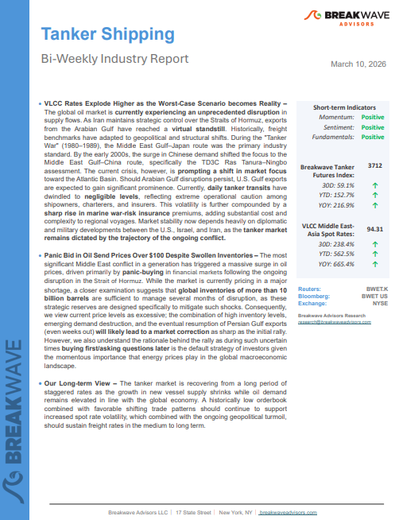
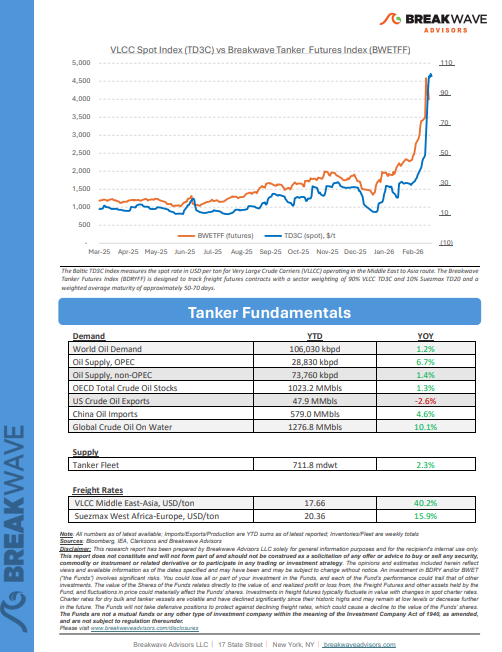
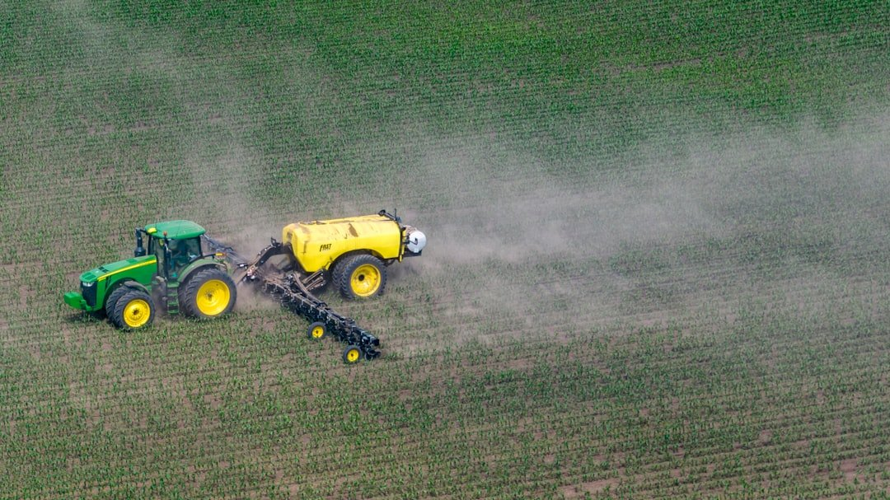
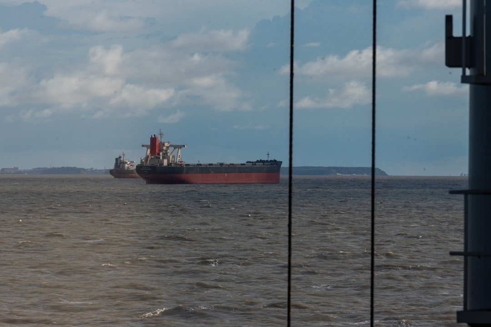

As the week comes to a close, take a moment to review the key insights from the past few days. Missed something? We've gathered all the top insights for you to catch up at your convenience.
VLCC Rates Explode Higher as the Worst-Case Scenario becomes Reality– The global oil market iscurrently experiencing an unprecedented disruptionin supply flows.


Escalating geopolitical tensions dominated global markets this week following coordinated military strikes by the U.S. and Israel against Iran.
Doric Weekly Market Insights
The first week of the US-Israel military campaign against Iran has drawn to a close, but what happens in the weeks to come remains extremely uncertain.
Gibson Tanker Market Report
Commercial tanker transits near zero, floating storage rising, war-risk premiums climbing.
Signal Ocean Market Insights
Since late February, the US–Israel confrontation with Iran has moved from a high-risk backdrop to an operational shipping event, with Hormuz transits have not been “formally” closed in a legal sense,
Xclusiv Shipbrokers Weekly Report
Our House View: Oil prices are rising at the quickest pace since the 1980s. Still, we see the Iran War as a major disruption, but well in line with our 3D themes..
Forvis Mazars Weekly Note
The recent escalation between the United States and Iran has quickly become one of the most disruptive geopolitical events for global shipping in recent years.
Novisea
Reduced coal demand in China and lower production quotas in Indonesia have weighed on seaborne coal flows.
Signal Ocean Commodity Radar

Following our previous weekly analysis focused on the oil segment, this report examines the potential implications of current Middle East disruptions for the agriculture sector and the dry bulk shipping market.
Allied Weekly Report
Energy markets pushed higher despite plans to release emergency supplies of oil. Precious metal prices declined amid inflationary concerns.
Commodities Wrap

Overall dry bulk rates rose last week, with only capesize rates coming under pressure.
From Commodore's Weekly Dry Bulk Reports
Yanbu emerges as a key VLCC export hub as Aramco diversions boost liftings, widen participation and drive freight premiums to Asia.
Vortexa Freight Weekly